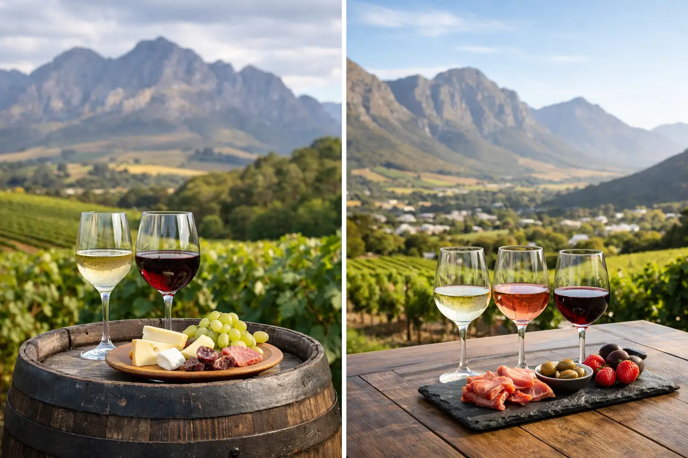

Stellenbosch versus Franschhoek Tastings

A Cape Winelands day can look very different depending on where the first glass is poured. When travelers ask about Stellenbosch versus Franschhoek tastings, they are usually choosing between two excellent experiences rather than trying to find one clear winner. Stellenbosch offers heritage, variety, and a strong sense of South Africa’s working wine country. Franschhoek feels more compact, food-focused, and dramatically framed by mountains.
For visitors based in Cape Town, the right choice comes down to your time, tasting preferences, group style, and whether lunch is as important as the wine. Both regions can be enjoyed on a guided day tour with hotel pickup and drop-off, but they reward slightly different travel plans.
Stellenbosch versus Franschhoek Tastings: The Main Difference
Stellenbosch is South Africa’s best-known wine town and one of the country’s most established wine-producing areas. Its estates range from grand historic properties with cellar-door tastings to contemporary vineyards focused on small-batch wines, art, gardens, and outdoor lunches. The town itself adds another layer to the day, with Cape Dutch architecture, oak-lined streets, galleries, cafés, and a lively university-town atmosphere.
Franschhoek is smaller and more concentrated around a picturesque village. The valley has a French Huguenot heritage, a reputation for polished hospitality, and a particularly strong food scene. Tasting rooms are often close together, which can make the day feel relaxed even when you visit several farms. The setting is striking: vineyards sit beneath steep mountain slopes, and many guests find themselves taking as many photographs as tasting notes.
Neither destination is only about wine. In Stellenbosch, the appeal is depth and range. In Franschhoek, it is often the combination of wine, scenery, and a memorable lunch. A first-time visitor who wants a broad introduction to the Winelands may lean toward Stellenbosch. Couples celebrating a special occasion or travelers building their day around dining may prefer Franschhoek.
Travel Time and the Shape of Your Day
From central Cape Town, Stellenbosch is generally the more direct option, often around 45 to 60 minutes by road depending on your hotel location and traffic. Franschhoek typically takes longer, commonly around 75 to 90 minutes. This matters on a full-day itinerary: choosing Franschhoek means a little more time in the vehicle, while Stellenbosch can leave more room for an unhurried town stop or an additional tasting.
That does not mean Franschhoek is inconvenient. For many travelers, its valley views make the drive part of the experience. The practical question is whether you want to cover more wine-country ground or settle into one beautifully contained destination.
A private excursion gives you the most flexibility. Your driver-guide can shape the route around preferred wineries, restaurant reservations, chocolate pairings, cheese boards, or a scenic stop. Shared Winelands tours usually follow a planned sequence and offer an easy option for solo travelers, couples, and small groups who want transport and local coordination handled for them.
What to Expect From Stellenbosch Tastings
Stellenbosch is a strong choice for travelers who are genuinely curious about wine. The region is particularly respected for Cabernet Sauvignon, Bordeaux-style red blends, Chenin Blanc, and Pinotage, South Africa’s signature red grape. You can taste across different styles in a single day, from fresh whites and rosés to structured reds designed for aging.
The estates themselves are diverse. One stop may be a historic farm with old cellars and formal grounds; the next may be modern, design-led, and focused on food-and-wine pairing. This makes Stellenbosch well suited to mixed groups where not everyone has the same idea of a perfect winery. A wine enthusiast can focus on varietals and production methods while other guests enjoy the gardens, views, coffee, or a leisurely lunch.
Stellenbosch also works well when you want to combine two Winelands areas in one day. Depending on the route and the pace you want, a guide may pair it with a nearby tasting in Paarl or a stop in Franschhoek. The trade-off is time. Trying to fit every famous estate into one day can turn a pleasurable experience into a rushed checklist. Two or three well-chosen tastings, plus lunch, are usually more satisfying than racing through five.
What to Expect From Franschhoek Tastings
Franschhoek feels tailored to a slower, more indulgent day. The valley produces excellent sparkling wine, Sauvignon Blanc, Chardonnay, Semillon, and elegant reds, with estates offering everything from casual tastings to guided food pairings. The wine quality is serious, but the atmosphere often feels celebratory rather than technical.
For many guests, lunch is the centerpiece. Franschhoek village and its surrounding farms are known for restaurants ranging from relaxed bistros to refined dining rooms. Reservations are wise during weekends, holidays, and peak summer travel periods, especially if your group has a preferred venue or dietary requirements.
The compact layout can make Franschhoek attractive for groups with different energy levels. Guests who prefer a full tasting flight can spend time at an estate, while those who want a lighter experience can enjoy a glass of wine, a vineyard view, and a walk through the village. It is also a popular choice for anniversaries, birthdays, and private group outings because the day naturally feels festive.
A note for travelers considering the Franschhoek Wine Tram: it can be a fun way to move between selected estates, but it is not always the best fit for every itinerary. It operates on set routes and schedules, and it can reduce flexibility for a private group. A dedicated vehicle and driver may be the better option if you have a lunch booking, limited time, mobility needs, or wineries you specifically want to visit.
Which Winelands Experience Fits Your Travel Style?
Choose Stellenbosch if you want a broader introduction to South African wine, a shorter drive from Cape Town, and a choice of estates with very different personalities. It is especially rewarding for travelers who want to learn about local grapes, compare wine styles, or add a historic town experience to their day.
Choose Franschhoek if spectacular valley scenery, exceptional food, and a more intimate village atmosphere are at the top of your list. It is a natural fit for couples, food lovers, and travelers who would rather linger over lunch than fit in an extra tasting.
Families and multigenerational groups should think beyond the wine list. Some farms have lawns, gardens, child-friendly menu options, or outdoor areas that make the day easier for non-tasters and younger guests. Others are more formal and better suited to adults seeking a quiet cellar-door experience. A well-planned private itinerary can balance those needs without asking everyone to enjoy the day in the same way.
Can You Visit Both on One Day?
Yes, but the best version of a combined day is selective. A practical route might begin with a morning tasting in Stellenbosch, continue through the mountain passes toward Franschhoek, and finish with lunch or a final tasting in the valley. It delivers variety and excellent scenery, but it is a fuller day with more driving than staying in one area.
For travelers with only one available Winelands day, combining regions can be worthwhile if you value seeing the landscape change and want a taste of both personalities. For wine-focused visitors, however, choosing one region often creates a better pace. You have time to ask questions, enjoy the setting, and order lunch without watching the clock.
Practical Planning for a Better Tasting Day
Book key tasting and lunch reservations in advance when possible, particularly for private groups and high-demand estates. Tasting fees, pairing options, opening hours, and child policies vary by farm, so confirm the details before departure. Some wineries credit a tasting fee toward bottle purchases, while others treat it separately.
Plan on eating during the day. Even experienced wine drinkers enjoy tastings more when they begin with breakfast, drink water between stops, and include a proper lunch or substantial platter. If you are not driving, you can taste more freely, but moderation still makes a long Winelands day more enjoyable. A dedicated driver also removes the concern of navigating unfamiliar roads after tastings.
Dress for the weather and the farm setting. Smart-casual clothing and comfortable shoes work well, particularly if you would like to walk through gardens or vineyards. Cape weather can shift quickly, so a light layer is useful even on bright days.
For larger parties, transport is the detail that shapes the whole experience. Coordinating several cars, tasting times, restaurant arrivals, and return transfers can take the enjoyment out of the planning. Flexi Tours can arrange a customized Winelands day with suitable vehicles, pickup coordination, and an itinerary built around your group’s preferred pace.
The better choice is the one that gives you enough time to enjoy the glass in front of you. Whether that means a detailed red-wine tasting in Stellenbosch or a long Franschhoek lunch beneath the mountains, leave room for the moments that cannot be scheduled.
Planning this trip?
Tell us your dates and we will put a day together for you.